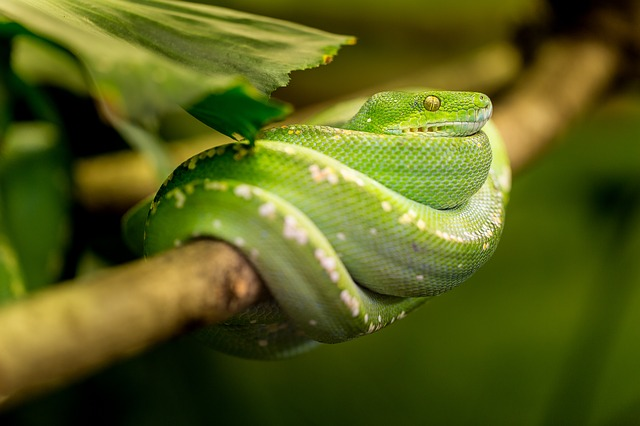

Animal Wiki
Click on an animal to read about it

Turtle
Turtles are reptiles of the order Testudines (or Chelonii) characterised by a special bony or cartilaginous shell developed from their ribs and acting as a shield. "Turtle" may refer to the order as a whole (American English) or to fresh-water and sea-dwelling testudines (British English).
Read More

Snake
Snakes are elongated, legless, carnivorous reptiles of the suborder Serpentes. Like all squamates, snakes are ectothermic, amniote vertebrates covered in overlapping scales. Many species of snakes have skulls with several more joints than their lizard ancestors, enabling them to swallow prey much larger than their heads with their highly mobile jaws.
Read More